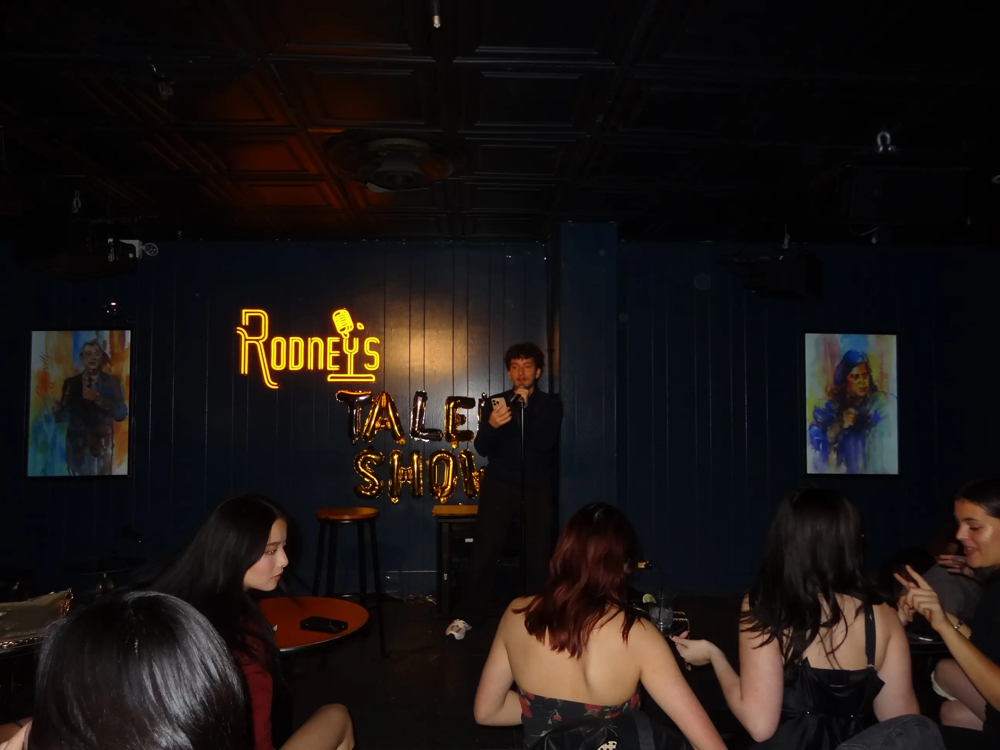
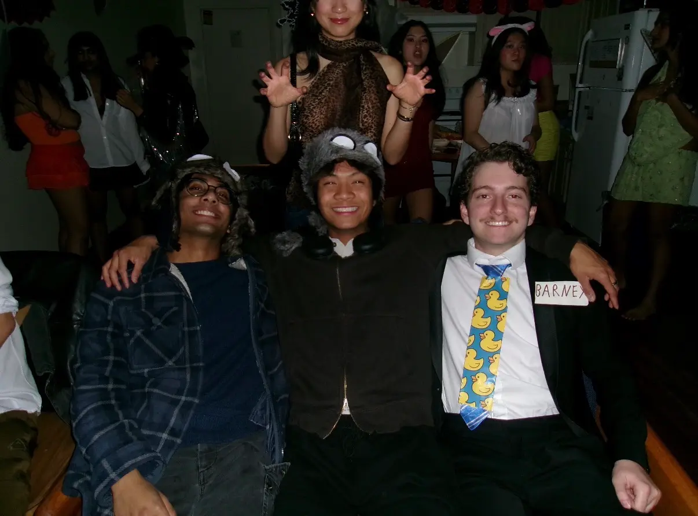
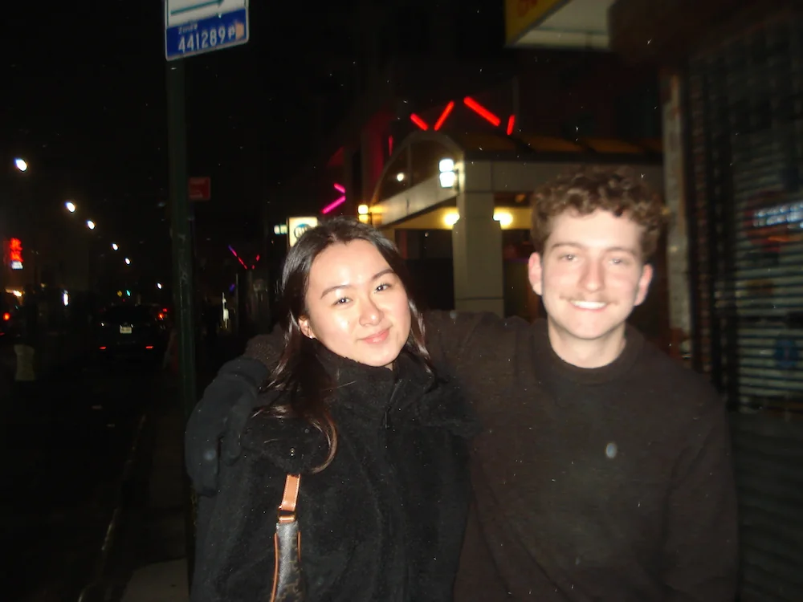
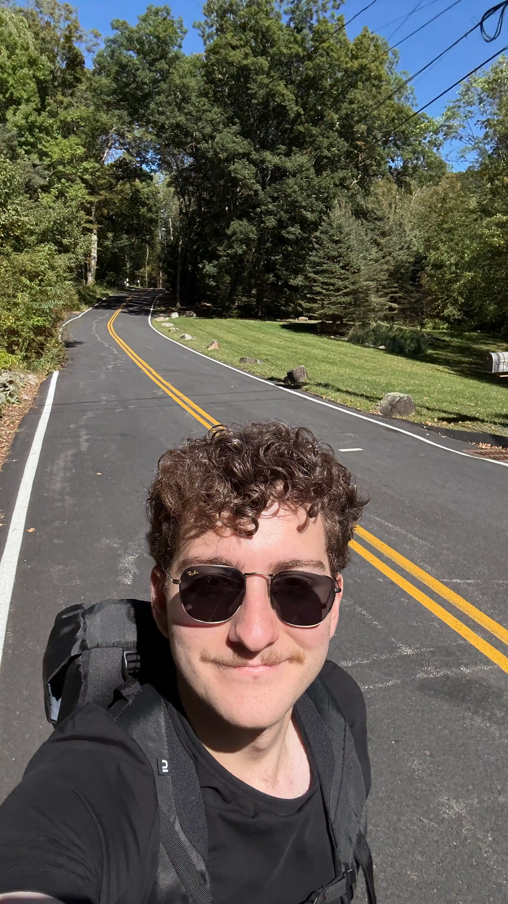

Hi! I'm Eren. I'm a 20 year old sophomore at NYU majoring in CS. I like singing, hiking, humbling business majors, and being mom's most handsome son.
Right now, I'm developing STGCNNs to forecast flash floods across New York City. Long-term, I want to get into AI4Science to solve physics problems.
I'm also minoring in Math and Quantum Technology because I love suffering. My grandma always says I'm good at Python/PyTorch too.
Take a look around. No flashy animations. Loads under 0.2s.
Contact me at em5227@nyu.edu. Here's my resume and GitHub.
Traditional clustering algorithms fail spectacularly with these shapes.
Me singing at a comedy club.
A typical Argoverse2 trajectory prediction scenario.
Home-cooked dinners. Flight simulators. Video games. Legally drinking with friends. I know this is corny, but I love America. It's the best place I've ever been to outside my own. I also wanna be an EMT if I get the time.
Me and the boys during Halloween. I was Barney from HIMYM.
She showed me around Flushing. I loved the food.
Hiking back to town from Harriman State Park.
Last updated Feb 2026. You are visitor number 0031.